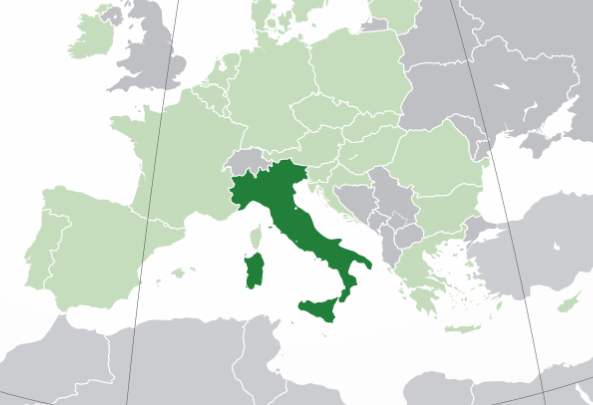
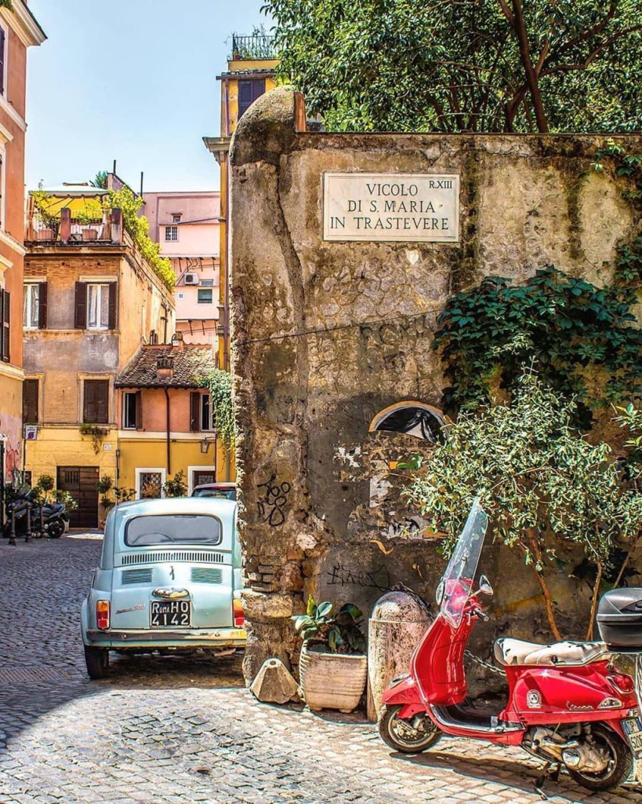
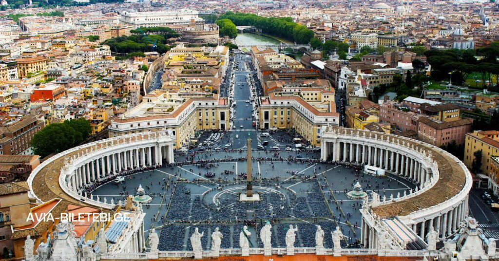
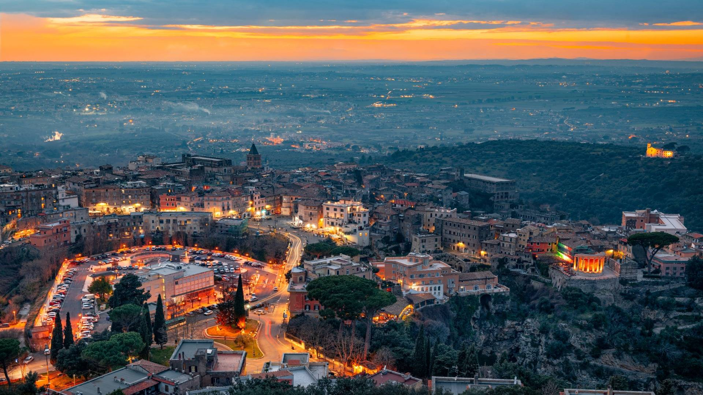
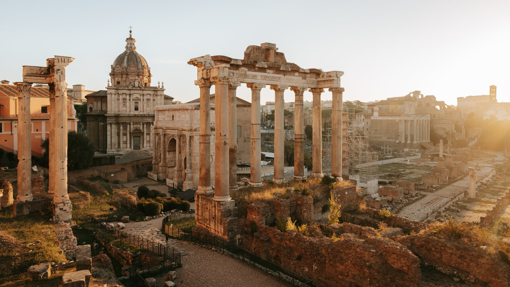

ROMA
როგორ დაიწყო რომი?
წარსული • აწმყო • მომავალი — ერთი ქალაქი. სამი ეპოქა. ათასწლეულების ისტორია.
ყველა გზა რომში მიდის!
რომი გვიჩვენებს, როგორ გარდაიქმნება პატარა დასახლება დიდ ცივილიზაციად, როგორ ცვლის მოსახლეობა ქალაქის სივრცეს და როგორ შეიძლება ისტორიულმა დედაქალაქმა მომავლის გამოწვევებს უპასუხოს.
რომი მდებარეობს იტალიის ნახევარკუნძულზე, ლაციოს რეგიონში, მდინარე ტიბრის ნაპირებზე. ხმელთაშუა ზღვასთან სიახლოვე, მდინარე, ბორცვიანი რელიეფი და სავაჭრო გზებთან კავშირი მის განვითარებას ხელს უწყობდა.
ქალაქი ტრადიციულად შვიდ ბორცვთან ასოცირდება. ლეგენდის მიხედვით, რომი ძვ. წ. 753 წელს რომულუსმა და რემუსმა დააარსეს. ისტორიული და არქეოლოგიური მონაცემები კი მიუთითებს, რომ ტიბრის მიდამოებში დასახლებები უფრო ადრეც არსებობდა და ისინი თანდათან ქალაქურ ცენტრად გაერთიანდა.

ანტიკური რომი და ურბანიზაცია
ურბანიზაცია ქალაქების მოსახლეობის ზრდასა და ქალაქური ცხოვრების წესის გავრცელებას ნიშნავს. ანტიკურ რომში მოსახლეობას იზიდავდა ვაჭრობა, ხელოსნობა, სახელმწიფო სამსახური, სამხედრო საქმიანობა და იმპერიის სხვადასხვა ნაწილთან კავშირები.
იმპერიის ძლიერების პერიოდში რომის მოსახლეობა, სავარაუდოდ, რამდენიმე ასეულ ათასს აღწევდა და ზოგიერთი შეფასებით დაახლოებით ერთ მილიონსაც უახლოვდებოდა; ზუსტი რიცხვი უცნობია.
მოსახლეობის ზრდამ გააჩინა საცხოვრებლის, საკვების, წყლის, გზებისა და სანიტარიული სისტემების უზრუნველყოფის საჭიროება. ეს გამოწვევები თანამედროვე მეგაქალაქების პრობლემებსაც მოგვაგონებს.

რომაული ინჟინერია ყოველდღიურ ცხოვრებაში
რომში არსებობდა insulae-დ წოდებული მრავალსართულიანი საცხოვრებელი შენობები. მათში ხშირად ჩვეულებრივი მოქალაქეები ცხოვრობდნენ. პირველ სართულებზე შეიძლებოდა მაღაზიები ყოფილიყო, ზედა სართულებზე კი — ბინები.
აკვედუკები შორეული წყაროებიდან წყალს აწვდიდა ქალაქს. რომაული ბეტონი, რომლის შემადგენლობაშიც ვულკანური მასალაც გამოიყენებოდა, მრავალი ნაგებობის გამძლეობას უწყობდა ხელს. საზოგადოებრივი აბანოები კი არა მხოლოდ ჰიგიენის, არამედ შეხვედრისა და დასვენების ადგილებიც იყო.

რომის იმპერიის დაცემის შემდეგ ქალაქის მოსახლეობა და პოლიტიკური მნიშვნელობა შემცირდა, თუმცა რომი არ გამქრალა. მან ახალი როლი შეიძინა, როგორც რელიგიურმა და კულტურულმა ცენტრმა.
ანტიკური ურბანიზაცია
ძველ რომში არსებობდა იატაკქვეშა გათბობის სისტემა — ჰიპოკაუსტი, რომელიც სახლებსა და საზოგადოებრივ აბანოებს ათბობდა.
თანამედროვე რომი — ქალაქი და მისი მოსახლეობა
დღევანდელი რომი იტალიის დედაქალაქია. აქ ანტიკური ნანგრევები, შუა საუკუნეებისა და რენესანსის არქიტექტურა, საცხოვრებელი უბნები, უნივერსიტეტები, ბიზნესები და თანამედროვე სატრანსპორტო ქსელი ერთ ურბანულ სივრცეში თანაარსებობს.

დემოგრაფია — ვინ ცხოვრობს რომში?
დემოგრაფია სწავლობს მოსახლეობის რაოდენობას, ასაკობრივ და სოციალურ სტრუქტურას, შობადობას, სიკვდილიანობასა და მიგრაციას.
რომის დემოგრაფიული ტენდენციები
მოსახლეობის დაბერება
დაბალი შობადობა და სიცოცხლის ხანგრძლივობის ზრდა ზრდის ხანდაზმული მოსახლეობის წილს. ეს აძლიერებს ჯანდაცვისა და სოციალური მომსახურების საჭიროებას.
მიგრაცია
იტალიის სხვა რეგიონებიდან და უცხო ქვეყნებიდან ჩამოსული ადამიანები გავლენას ახდენენ ქალაქის კულტურულ მრავალფეროვნებასა და შრომით ბაზარზე.
გარეუბნების ზრდა
საცხოვრებლის ფასებისა და ცხოვრების პირობების გამო ზოგიერთი ოჯახი ცენტრიდან გარეუბნებში ან მეზობელ მუნიციპალიტეტებში გადადის. შედეგად იზრდება ყოველდღიური გადაადგილება მეტროპოლიურ არეალში.
ბუნებრივი კლება
როდესაც გარდაცვლილთა რაოდენობა დაბადებულთა რაოდენობას აღემატება, მოსახლეობა ბუნებრივად მცირდება. მიგრაციამ ეს ცვლილება შეიძლება ნაწილობრივ დააბალანსოს.
ურბანული გამოწვევები
🚦 სატრანსპორტო გადატვირთვა
საცობები, ხმაური და გამონაბოლქვი ქალაქის ყოველდღიური გამოწვევებია.
🏠 საცხოვრებლის სიძვირე
ცენტრიდან მოსახლეობის გადინება ზრდის ხელმისაწვდომი საცხოვრებლის საჭიროებას.
🌡️ კლიმატის ცვლილება
სიცხე, ძლიერი ნალექები და წყლის დეფიციტი ქალაქის გარემოზე მოქმედებს.
🏛️ ისტორიული მემკვიდრეობა
რესტავრაცია რთული და ძვირადღირებული პროცესია. საჭიროა მეცნიერული დაცვა და ფრთხილი დაგეგმვა.
მარადიული ქალაქი არასოდეს ჩერდება!
2050 წლის რომის ზუსტი სახე წინასწარ ცნობილი არ არის. თუმცა დღევანდელი გამოწვევებისა და მდგრადი განვითარების პრინციპების მიხედვით შეგვიძლია წარმოვიდგინოთ რამდენიმე შესაძლო ცვლილება.

რომის ხუთი მომავლის მიმართულება
🌳 მწვანე ურბანიზაცია
მეტი პარკი, ხეებით დაფარული ქუჩები, მწვანე სახურავები და ჩრდილიანი საზოგადოებრივი სივრცეები შეამცირებს სიცხის გავლენას და გააუმჯობესებს გარემოს.
🚌 ჭკვიანი და სუფთა ტრანსპორტი
ელექტროავტობუსები, გაუმჯობესებული მეტრო, ტრამვაი და უსაფრთხო ველობილიკები შეიძლება დაეხმაროს ქალაქს ავტომობილებზე დამოკიდებულების შემცირებაში.
💧 კლიმატთან ადაპტაცია
წვიმის წყლის მართვა, გამწვანება, წყლის დაზოგვა და სიცხისგან დაცული საჯარო სივრცეები ქალაქს კლიმატურ რისკებთან შეგუებაში დაეხმარება.
💡 ტექნოლოგიური ქალაქი
ენერგოეფექტიანი შენობები, ჭკვიანი განათება და ციფრული მუნიციპალური სერვისები რესურსების უფრო ეფექტიან გამოყენებას შეუწყობს ხელს.
🤝 ადამიანზე მორგებული გარემო
ხანდაზმულებისთვის ადაპტირებული სივრცეები, ახალგაზრდების განათლება და დასაქმება, ხელმისაწვდომი საცხოვრებელი და მიგრანტების ინტეგრაცია სოციალური მდგრადობის ნაწილია.
იცოდით თუ არა?
ძველ რომში აკვედუკების საშუალებით წყალი ათეულობით კილომეტრიდან მიჰყავდათ ქალაქში.
რომის ისტორიულ ნანგრევებში უამრავი კატა ცხოვრობს და ქალაქის ერთგვარ სიმბოლოდაც იქცა.
რომი შვიდ ისტორიულ ბორცვთან ასოცირდება, რის გამოც მას „შვიდბორცვიან ქალაქსაც“ უწოდებენ.
ერთი ქალაქი. სამი ეპოქა.
რომის ისტორია გვიჩვენებს, რომ ქალაქის განვითარება უწყვეტი პროცესია. პატარა დასახლებიდან მსოფლიო იმპერიის ცენტრამდე, შემდეგ კი თანამედროვე ევროპულ დედაქალაქამდე — რომმა არაერთი გარდაქმნა განიცადა.
მისი გამოცდილება გვასწავლის, რომ გეოგრაფიული მდებარეობა, ბუნებრივი რესურსები, მოსახლეობა, ეკონომიკა, ტექნოლოგიები და ისტორიული მემკვიდრეობა ერთმანეთთან მჭიდროდ არის დაკავშირებული.
დღეს რომის მთავარი ამოცანაა, შეინარჩუნოს თავისი უნიკალური ისტორიული სახე და ამავე დროს უპასუხოს თანამედროვე ურბანულ და დემოგრაფიულ გამოწვევებს.